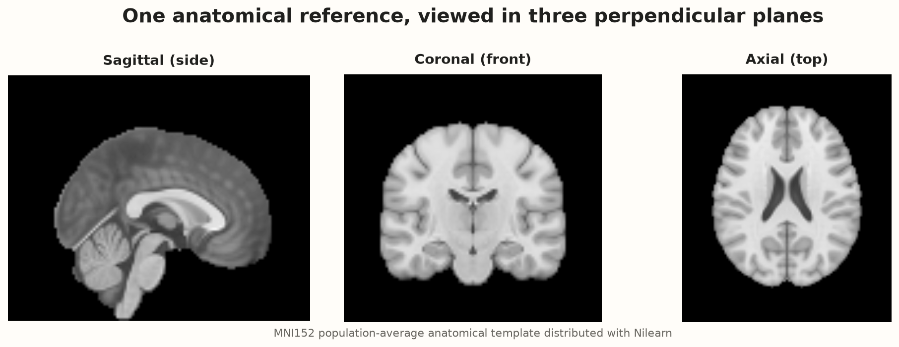
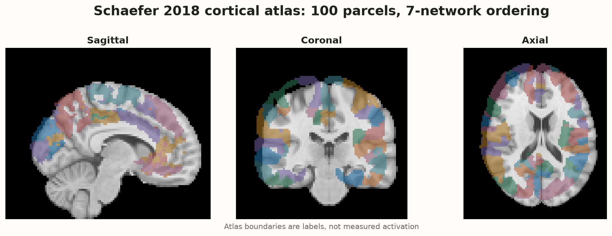
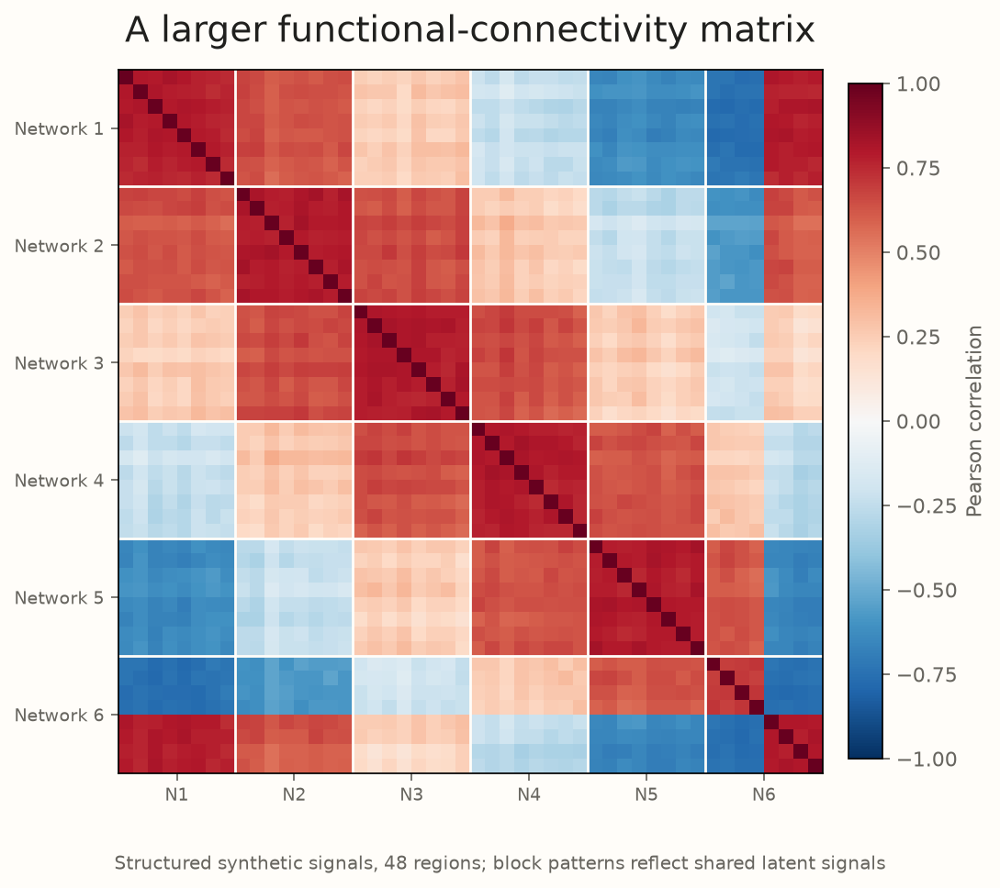
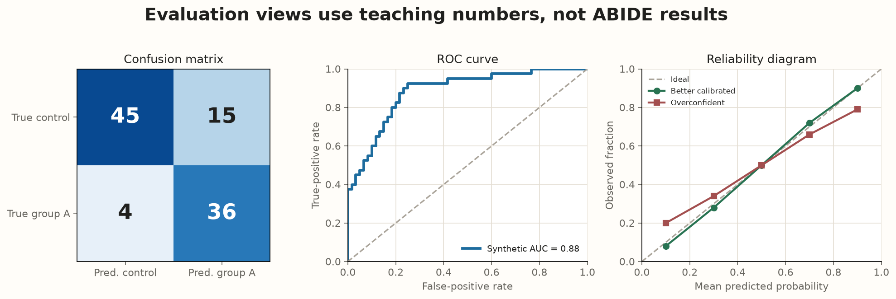
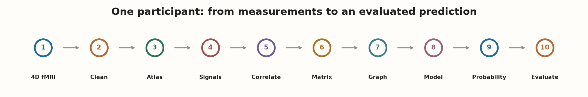

From fMRI to Machine Learning: A Visual Guide to Brain Connectivity
A machine-learning model never sees a brain as a person does. It receives numbers. This page follows one resting-state scan as three-dimensional measurements become regional time series, correlations, a graph, a model score, and finally an evaluated prediction.

MRI begins as a grid of measurements
A digital photograph is a 2D grid of pixels. MRI extends the grid through depth. A single small 3D cell is a voxel, short for volume element. Each voxel stores a numerical intensity produced by the scanner's pulse sequence and tissue response.
Zoom from anatomy to one number
The tiny matrix is illustrative; values are arbitrary intensity units.
Select a matrix cell to connect one square to its numerical intensity.
Coordinates need a convention. Scanner coordinates describe locations in the acquired image; standardized coordinates describe locations after alignment to a reference such as MNI space. Axial, coronal, and sagittal name perpendicular slice planes. Left-right orientation and coordinate transforms must be checked rather than guessed.
fMRI is a 3D movie, not one static image
Structural MRI is designed to show anatomy in detail. Functional MRI repeatedly measures a brain volume. One time point contains a 3D array; stacking $T$ time points produces a 4D array: three spatial axes plus time.
$X,Y,Z$ count voxel positions along three spatial directions; $T$ counts measured time points. Treating these data like an ordinary photograph would discard their central feature: change through time.
What makes the signal “functional”?
The blood-oxygen-level-dependent, or BOLD, signal changes with local blood oxygenation, flow, and volume. These hemodynamic changes are associated with neural activity, but BOLD is indirect: it is not a recording of individual neurons firing. At rest, regional signals still fluctuate, and researchers can study statistical relationships among those fluctuations.
Follow one marked location through time
Move the slider. The same region changes brightness, and its current value is marked on the signal below.
At time $t$, the selected voxel $v$ contributes one number $x(v,t)$. Following fixed $v$ across all times gives $x(v,1),x(v,2),\ldots,x(v,T)$.
Raw measurements contain biology and nuisance variation
Breathing, cardiac effects, scanner drift, head motion, and differences in anatomy can all alter voxel values. Preprocessing tries to make measurements comparable and reduce known artifacts before connectivity is estimated. It cannot make data perfect.
Motion correction: stabilize the coordinate frame
Before correction, the head shifts relative to the voxel grid. After rigid alignment, corresponding locations are closer.
Tiny movements matter because a boundary voxel may contain brain tissue in one frame and more cerebrospinal fluid in another. Shared motion can then look like synchronized biology.
Segmentation and parcellation answer different questions
Segmentation
Assigns voxels to broad tissue or object classes, such as gray matter, white matter, and cerebrospinal fluid. It asks: what type of material is here?
Parcellation
Divides the brain, often cortex, into named or numbered regions using an atlas or data-driven rule. It asks: which analysis region contains this location?
A simplified 12-region teaching atlas
Toggle the labels. Boundaries are invented for explanation and are not anatomical claims.
The drawing establishes the operation: each spatial location receives a region label. A real atlas uses reproducible boundaries and metadata.

Many voxels become one signal per region
Suppose one parcel contains four voxels with values 98, 101, 103, and 102 at a time point. A simple regional summary is their mean: $(98+101+103+102)/4=101$. Repeating the summary at every time produces one regional time series. Atlas maskers can also standardize, detrend, and handle confounds according to specified choices.
$R_i$ is the set of voxels assigned to region $i$; $|R_i|$ is its voxel count; $x_i(t)$ is the mean signal for that region at time $t$.
Four regions, four time series
Shared rises and falls are already visible before calculating correlation.
Correlation stores one kind of co-fluctuation
If two regional signals repeatedly rise and fall together, their Pearson correlation is positive. If one rises while the other falls, it is negative. If their linear co-fluctuation is weak, it is near zero. Correlation does not prove direct communication, anatomical wiring, or causation.
See the relationship before the equation
Choose a pattern. The displayed coefficient is calculated from the plotted values.
$x_i(t)$ and $x_j(t)$ are regions $i$ and $j$ at time $t$; $\bar{x}_i$ and $\bar{x}_j$ are their time averages; the numerator adds paired deviations; the denominator rescales them so $-1\le r_{ij}\le1$.
All region pairs form a connectivity matrix
With $R$ regions, compute one correlation for every pair and place it at row $i$, column $j$. The diagonal is $1$ because each signal perfectly correlates with itself. Pearson correlation is symmetric, so $C_{ij}=C_{ji}$. A matrix stores statistical functional connectivity; it is not a map of physical axons.
A six-region matrix you can inspect cell by cell
Hover, focus, or tap a cell. Color and printed value both carry the sign.
The two region names and correlation will appear here.

The matrix becomes a weighted graph
Node
One atlas region.
Edge
A retained regional relationship.
Weight
The correlation value or a transformed version.
$A$ is the adjacency matrix. $\tau$ is a chosen threshold. The first definition keeps weighted signed edges; the second makes a binary graph based on absolute magnitude.
Threshold the six-region graph
Increase $\tau$ to retain only stronger absolute correlations. Solid edges are positive; dashed edges are negative.
A threshold is a modeling choice. Results may change with density, sign handling, self-loops, atlas resolution, or use of partial rather than Pearson correlation.
Start with a baseline that is easy to audit
The upper triangle of a symmetric matrix contains each pair once. For six regions, that is $6(6-1)/2=15$ features. For 200 regions, it is 19,900. A logistic-regression baseline flattens those edges into a feature vector.
$x_k$ is one connectivity feature; $\beta_k$ is a coefficient learned from training participants; $\beta_0$ is an intercept; $z$ is the model score; $p$ maps that score between 0 and 1.
A regularized linear baseline is important even if a GNN is planned. If the complex model does not improve carefully held-out performance, its extra machinery has not demonstrated practical value for this task.
A graph neural network exchanges messages among regions
Each node starts with features, perhaps its connectivity profile, mean signal properties, or other declared regional summaries. In one message-passing layer, a region asks connected neighbors what features they carry, weights those messages, combines them with its own features, and updates its representation.
Step through one message-passing layer
The text status makes the animation's meaning available without color.
Step 1 of 5: choose the highlighted Control region as the receiving node.
$h_i^{(\ell)}$ is node $i$'s feature vector at layer $\ell$; $\mathcal N(i)$ is its neighbor set; $w_{ij}$ is edge weight; the $W$ matrices are learned transformations; $\sigma$ is a nonlinear activation. This is a simplified signed, weighted message-passing equation, not the only valid GNN design.
After several layers, graph pooling combines all node representations, for example by a mean or learned pooling operation. The result is one fixed-length vector for the participant's graph. A final classifier turns that vector into a score.
A score becomes a probability-like output, then a prediction
Move the model score through a sigmoid
The arithmetic updates without retraining a model.
Estimated class-1 probability: 81.3%
Group A: 0.73 · Control: 0.27
Predicted: Group A
Recorded research label: Group A
Group A: 0.62 · Control: 0.38
Predicted: Group A
Recorded research label: Control
Both examples are synthetic. A probability does not remove uncertainty; choosing the larger value forces a label even when evidence is weak.
Loss quantifies error; backpropagation assigns responsibility
For a binary target $y\in\{0,1\}$ and predicted probability $p$, binary cross-entropy is:
Same true label, very different penalties
A confidently wrong prediction receives a much larger penalty because $-\log(0.05)$ is large.
Backpropagation applies the chain rule to calculate how changing each learned parameter would change the loss. An optimizer then takes a small step intended to reduce training loss.
$\theta$ denotes learned coefficients or weights; $\eta$ is the learning rate; $\nabla L(\theta)$ is the vector of loss slopes. Lower training loss does not guarantee better performance on new sites or participants.
Training, tuning, and final testing use different people
One hundred synthetic participants
Color is repeated in the labels and counts.
In $K$-fold cross-validation, participants rotate through held-out folds. Hyperparameters and feature selection must be performed inside the training portion, preferably with nested cross-validation when the same data support model selection and performance estimation.
In multi-site fMRI, the scanner can masquerade as the target
ABIDE aggregates data from multiple sites. Sites differ in scanner manufacturer, sequence, timing, recruitment, demographics, motion, and preprocessing quality. A random participant split may place each site's signature in both training and test data, making site recognition useful to the classifier.
A confounded example
The imbalance is intentionally extreme so the failure is easy to see.
5 controls
45 controls
A classifier can appear 90% accurate by identifying the scanner and using the majority label at that scanner. It has learned acquisition context, not necessarily a biological pattern that generalizes.
Site-stratified splits preserve label balance within sites but still test sites seen during training. Leave-one-site-out evaluation asks the harder question: does a model trained on several sites generalize to a site it has never seen? It may be more informative for distribution shift, but fold sizes, class balance, and site heterogeneity still require careful reporting. Harmonization must be fitted using training data only or it can leak test information.
Potential shortcuts
Site, scanner, protocol, age, sex distribution, head motion, and missing-data patterns.
Design responses
Grouped splits, site-aware evaluation, matched sensitivity analyses, training-only confound handling.
Report
Per-site counts and metrics, uncertainty, exclusions, preprocessing variants, and failed folds.
One confusion matrix supports several metrics
The consistent teaching example below has 100 test participants: 40 Group A and 60 controls. The model correctly predicts 36 Group A participants and 45 controls. A false positive is a control predicted as Group A; a false negative is a Group A participant predicted as control. These are synthetic counts, not measured ABIDE performance.
| Metric | Question | Arithmetic | Value |
|---|---|---|---|
| Accuracy | What fraction of all labels were correct? | $(36+45)/100$ | 0.81 |
| Sensitivity / recall | Of 40 Group A labels, how many were found? | $36/(36+4)$ | 0.90 |
| Specificity | Of 60 controls, how many were found? | $45/(45+15)$ | 0.75 |
| Precision | Of 51 Group A predictions, how many were correct? | $36/(36+15)$ | 0.706 |
| False-positive rate | Of controls, how many were labeled Group A? | $15/(45+15)$ | 0.25 |
Confusion-matrix calculator
Change integer counts; metrics update from the same four cells.
A ROC curve varies the decision threshold and plots sensitivity against false-positive rate. AUC is the probability that a randomly selected positive example receives a higher score than a randomly selected negative example, under the evaluated sample. It does not specify calibration, clinical utility, or performance at a chosen threshold.

Calibration asks whether probabilities keep their promises
Put predictions into bins, such as 0.7–0.8, and compare their mean predicted probability with the observed class fraction. If predictions averaging 0.8 contain the target research label only 60% of the time, the model is overconfident in that bin. Calibration must be assessed on relevant held-out data and may change across sites.
For participant $s$, $p_s$ is predicted probability and $y_s$ is 0 or 1. Lower is better, but the score combines calibration and discrimination. Calibration methods such as temperature scaling must be fitted on validation data, never on the final test labels.
Which connections influenced the prediction?
For linear logistic regression, each standardized edge has a coefficient: changing that feature changes the score according to its coefficient, holding model inputs fixed. Permutation importance measures performance loss after shuffling a feature. GNN saliency, edge masks, and attention weights probe more complex models, but may be unstable and answer different questions.
Illustrative edge importance
Thicker highlighted edges influence this synthetic model example more; dashed edges have negative sign.
The complete transformation at a glance

One participant as matrices, a graph, and a loss
A complete, inspectable example
The project folder contains the exact script that generated every PNG on this page, the synthetic six-region matrix as JSON, and a separate ABIDE baseline. No raw fMRI or participant-level ABIDE data are stored in this repository.
Published figures
generate_figures.py renders the MNI152 views, Schaefer atlas overlay, 48-region matrix, evaluation summary, and recap. It writes caches to /tmp.
Optional real-data baseline
abide_connectivity_baseline.py fetches 200 quality-checked PCP CC200 derivatives, builds correlation vectors, and runs leave-one-site-out logistic regression. Its outputs are not reported here.
python -m pip install -r machine-learning-fmri/requirements.txt
python machine-learning-fmri/generate_figures.py
python machine-learning-fmri/abide_connectivity_baseline.py # optional downloadFor a serious experiment, add prespecified inclusion criteria, scan and registration QC, a confound strategy, nested model selection, uncertainty intervals, site-level reporting, preprocessing sensitivity analyses, and a locked external test plan. A single short script is an educational starting point, not a publication-ready protocol.
What can make an fMRI classifier look better than it is?
- Small effective samples relative to thousands of edges make estimates unstable.
- Scanner and site differences can be easier to learn than the intended target.
- Head motion can create structured connectivity artifacts and differ between groups.
- Demographic imbalance can produce shortcuts through age, sex, or recruitment patterns.
- Preprocessing choices alter regional signals and correlations.
- Feature selection outside folds leaks held-out labels into training.
- Repeated-subject leakage makes person recognition possible.
- Hyperparameter tuning on test results converts the test set into validation data.
- Multiple comparisons increase false discoveries when many edges and analyses are searched.
- Distribution shift means a model may fail on a new scanner, site, age range, or clinical setting.
- Uncalibrated probabilities can be confidently wrong.
- Atlas and graph definitions change nodes, edges, signs, and density.
Primary and technical sources
- Di Martino et al. (2014), “The autism brain imaging data exchange: towards a large-scale evaluation of the intrinsic brain architecture in autism,” Molecular Psychiatry. doi:10.1038/mp.2013.78.
- ABIDE project and ABIDE Preprocessed Connectomes Project, including pipeline and download documentation.
- Nilearn
fetch_abide_pcp, functional connectomes guide, and Schaefer atlas fetcher. - Schaefer et al. (2018), “Local-Global Parcellation of the Human Cerebral Cortex from Intrinsic Functional Connectivity MRI,” Cerebral Cortex. doi:10.1093/cercor/bhx179.
- Ogawa et al. (1990), early BOLD contrast work, doi:10.1073/pnas.87.24.9868; Logothetis et al. (2001), relationship between BOLD and neural signals, doi:10.1038/35084005.
- Power et al. (2012), motion-induced connectivity artifacts, doi:10.1016/j.neuroimage.2011.10.018; Ciric et al. (2017), confound-regression benchmark, doi:10.1016/j.neuroimage.2017.03.020.
- Gilmer et al. (2017), “Neural Message Passing for Quantum Chemistry,” Proceedings of ICML.
- Varoquaux et al. (2017), cross-validation and sample-size issues in neuroimaging, doi:10.1016/j.neuroimage.2016.10.038; Guo et al. (2017), neural-network calibration, Proceedings of ICML.
| Resource | Use on this page | Terms and modification note |
|---|---|---|
| Nilearn / MNI152 template | Python rendering of the template in three planes | Nilearn is BSD 3-Clause software. The page attributes the template through Nilearn; data resources can have terms separate from the software. |
| Schaefer 2018 atlas | Our modified visualization: labels over the MNI152 anatomy | Fetched from the CBIG project through Nilearn and cited to the atlas paper. CBIG carries a repository license, but the atlas directory does not state separate atlas-file terms; confirm scope before redistributing atlas files. No raw atlas file is included here. |
| ABIDE / PCP | Worked research question and optional downloading script; no participant data embedded | ABIDE I states non-commercial CC BY-NC-SA 3.0 access and data-use conditions. Users must review the official current terms, attribute investigators, and preserve applicable restrictions. |
| All other figures and interactions | Original diagrams and deterministic synthetic numerical examples | Generated in this repository. They may explain methods but must not be represented as empirical ABIDE findings. |
External publication figures were not copied. URLs were selected from official project pages, technical documentation, publisher DOI records, and primary papers. License summaries are practical attribution notes, not legal advice.